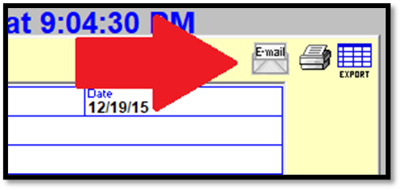
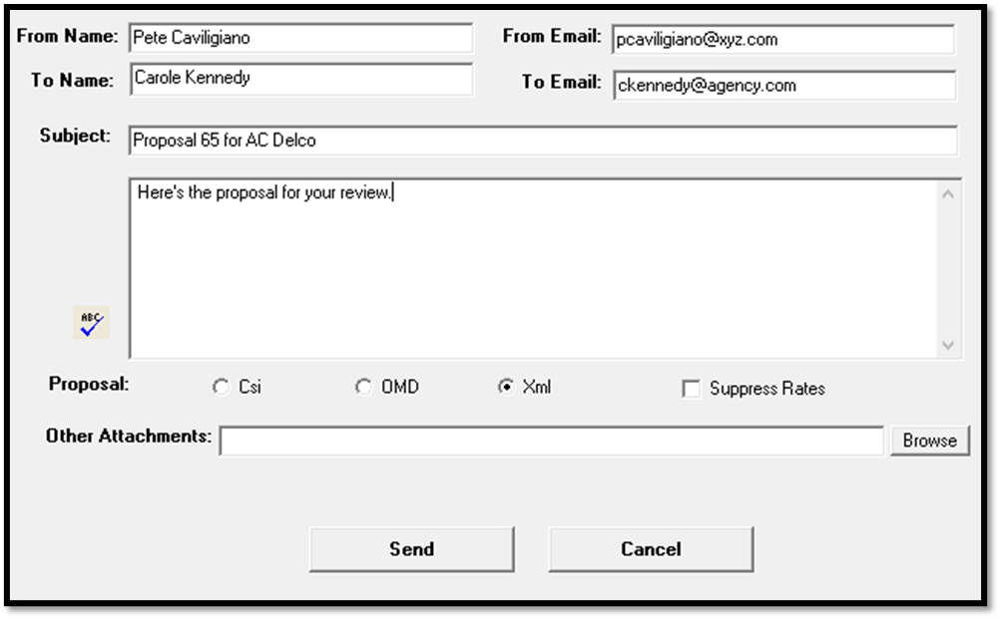
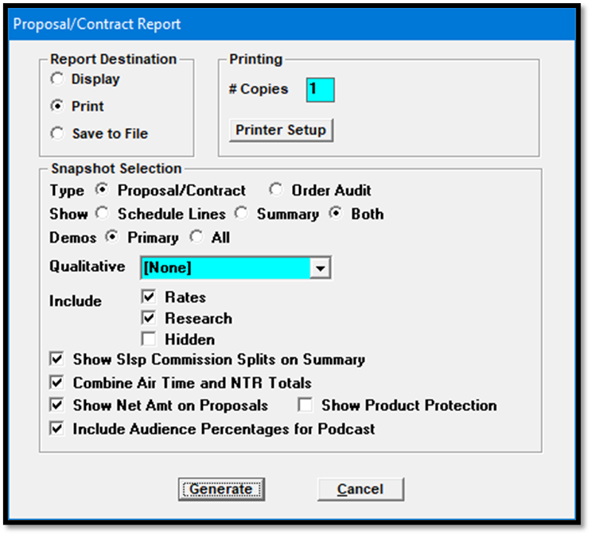
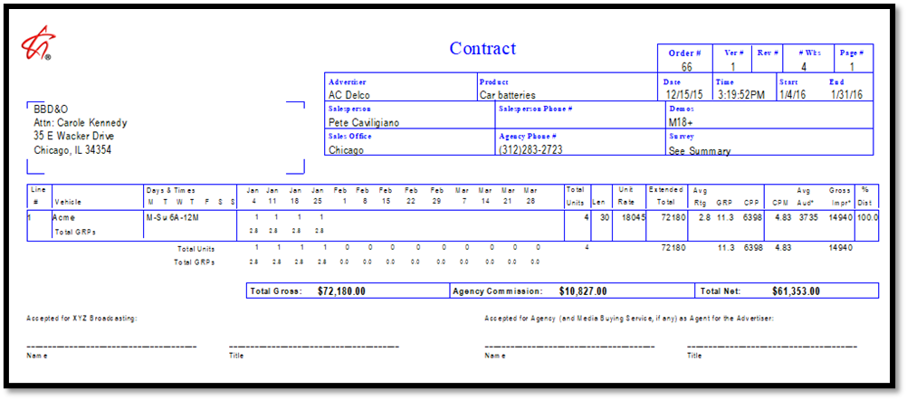
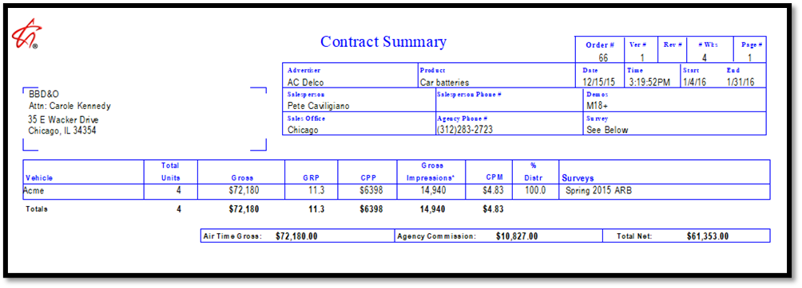
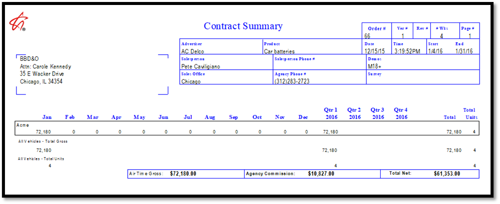
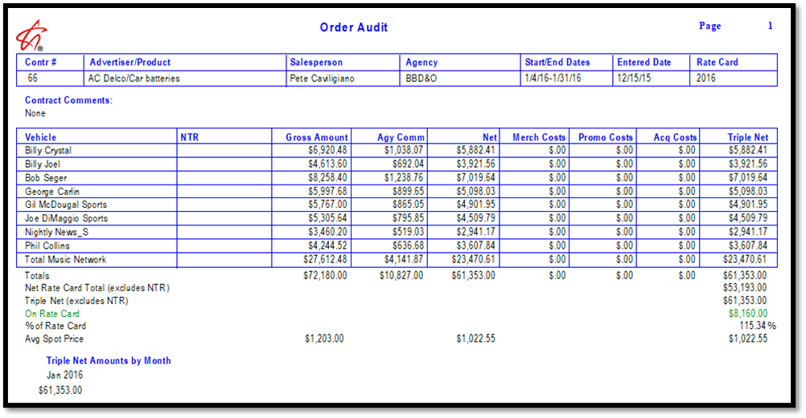
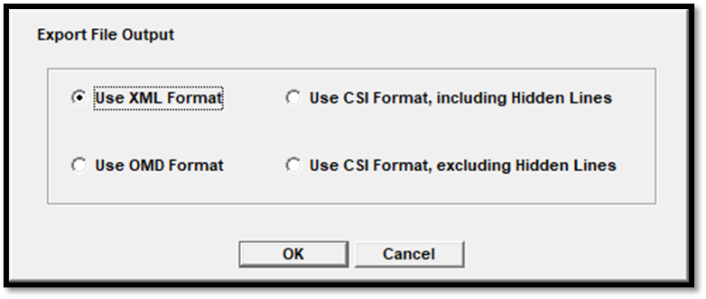

Emailing, Printing, and Exporting
The Email, Printer, and Export icons in the upper right corner of the Proposal Screen are used for emailing, printing, and exporting proposals.

Emailing a Proposal
When a proposal is on the Proposal screen, it can be directly emailed through the system to the Agency Buyer (by default) or to another person, as shown in the picture below.

An explanation of each field appears below. The text fields can be edited as needed by simply typing into them.
From Name and From Email: the sender of the email, as pulled from the signed on user’s profile.
To Name and To Email: by default, the agency buyer and their email address.
Subject: shows the proposal number and advertiser name.
Text: used for entering email text that will appear in the body of the email. If Microsoft Word is installed, you can press the Spell Check (ABC) button to perform a spell check of the email text.
Proposal: choose the format of the proposal that will be sent. The available options are CSI, OMD, and XML (Proposal XML). When the Proposal XML option is selected, the “Suppress Rates” checkbox is available. When “Suppress Rates” is checked on, the rate will be changed to zero for each contract line as shown on the Proposal XML export.
Other Attachments: additional attachments can be added to the email using the Browse button. One way this could be used it to attach the PDF contract report to the email.
Once the fields have been filled out as needed, press the Send button to email the proposal.
Printing a Proposal
When a Proposal is displayed on the screen, and the printer icon in the upper right corner is pressed, the contract “Snapshot” report selectivity screen is displayed (see picture below).

Report Destination: choose whether the report will be displayed, printed, or saved to a file.
Type
Proposal/Contract: will print the standard proposals/contract report.
Proposal/Contract schedule line detail page example (below)

Proposal/Contract vehicle summary page example (below)

Proposal/Contract yearly and quarterly summary page example (below)

Order Audit: produces the Order Audit report, which lists the gross, agency commission, and net amounts per vehicle (airtime and NTR), as well as any acquisition, merchandising, or promotion costs associated with the order. The totals at the bottom of the report are the actual costs and revenue.
Order Audit example (below)

Proposal Contract report options
Show Schedule Lines, Summary, or Both: this setting is used to choose which parts of the proposal/contract report should be included. The schedule line option includes each contract line from the contract. The summary option includes a summary page by vehicle, and a summary page by year and quarter.
Demos: Primary or All: if the proposal only has one demo category defined in the contract header, or only the primary demo should be displayed on the report, select the “primary” option. If there are more than one demo categories defined on the contract, to display them, select “all”.
Qualitative: this is only used if the proposal contains a Split Network buy. If so, select the region from the dropdown
Include/Exclude Rates: when checked on, spot rates will be displayed on the report. When not checked on, the rates are not shown, though the total gross, commission, net, and total CPP and CPM (if applicable) will still be displayed.
Include/Exclude Research: when checked on, the report will show the research data for the selected demo category.
Include/Exclude Hidden: when checked on, the hidden lines that make up a package are shown on the report, in addition to the package line. When not checked on, the hidden lines are suppressed.
Show Salesperson Commission Splits on Summary: this setting determines whether salesperson commission splits are shown or not.
Combine Air Time and NTR Totals: when checked on, air time and NTR totals are combined on the summary page. When not checked on, the air time and NTR totals are shown on separate pages and not combined.
Show Net Amount on Proposals: when checked on, the agency commission and net amount is shown on the report. When not checked on, the agency commission and net is suppressed.
Show Product Protection: when checked on, the primary and secondary product protection codes are shown in the report header area.
Include Audience Percentages for Podcast: when checked on, any vehicles set to the Podcast medium type will include the average rating, GRP, and CPP information on the detail and summary pages. When not checked on, any vehicles set to the Podcast medium type will exclude the average rating, GRP, and CPP.
Suppress NTR Details: When checked on, from the NTR detail page, detail area, it will suppress all NTR fields except the Vehicle, Billing Date, Description, and overall total. In other words, the Item Bill Type, Amount per Item, Units per Item, # of Items, and vehicle totals will not be shown. (Version 8.1 and above only.)
This report can also be run from the Traffic Report list using the Proposal/Contract report option.
Printing Differences Only
When viewing a contract in View mode and comparing it to another revision using the comparison dropdown (the small dropdown that appears above the average/total price field when in View mode), the differences will be printed by pressing the printer icon and generating the snapshot report. When running the snapshot report like this, it will run a special “differences only” version of the report that shows what was changed between the selected revision and the revision it’s being compared to, like the way the differences view itself works on the Proposals/Orders screen, with minuses used to indicate a decrease, and additions being shown without a minus sign.
Exporting a Proposal
The export button is used to generate an export file in the Proposal XML, OMD, or CSI format, that can then be sent to an agency. The format that is used is determined by a setting on the Agency Lists screen. (On version 7.1 and above, the Proposal Export form setting from the Agency List screen only sets the default form, which can be overridden when generating the export.)
To generate a proposal export file:
- Save the proposal if it has not already been saved.
- Bring the proposal up in View mode and click the Export icon to bring up the “Save As” browse screen. A non-default save location can be chosen or it can be saved in the default location.
- Press the Save button on the Save As screen to save the export file.
- Retrieve the export file from the save location.
On version 7.1 and above, when pressing the Export button, a sub-screen appears, as shown in the picture below.

There are four export options on this sub-screen: XML, OMD, CSI with hidden lines shown, and CSI with hidden lines not shown. The default method is set by the Proposal Export Form option on the Agency list screen.
Select the option you want to use, then press the OK button to bring up the “Save As” browser. Select the save location, and then press Save to create the export file using the selected format.
For more detailed information on the Proposal XML export, please see the Traffic Exports help document that is available on the Counterpoint website.